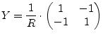
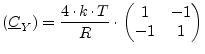
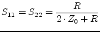
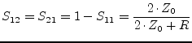
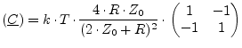
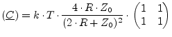
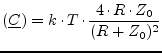

For DC and AC simulation an ideal resistor with resistance  yields:
yields:
|  | (9.3) |
The noise correlation matrix at temperature  yields:
yields:
|  | (9.4) |
The scattering parameters normalized to impedance  writes as follows.
writes as follows.
|  | (9.5) |
|  | (9.6) |
Being on temperature  , the noise wave correlation matrix
writes as follows.
, the noise wave correlation matrix
writes as follows.
|  | (9.7) |
The noise wave correlation matrix of a parallel resistor with resistance  writes as follows.
writes as follows.
|  | (9.8) |
The noise wave correlation matrix of a grounded resistor with resistance  is a matrix consisting of one element and writes as follows.
is a matrix consisting of one element and writes as follows.
|  | (9.9) |